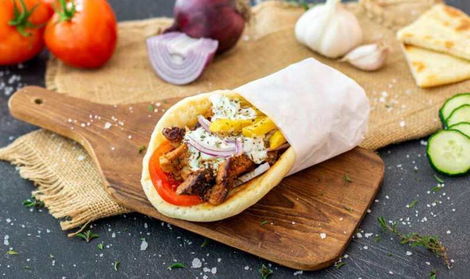

🥙 Gyros & Pita
Welke regio = welke ingrediënten?

Gyros als maaltijd of snelle pita – op Kos (en de omliggende eilanden) zit er overal een eigen twist in. Zo herken je waar je pita “vandaan” komt.
Lam wordt op Kos zelden gebruikt; traditioneel kiest men voor varken of kip. Naast gyros kun je in je pita ook souvlaki, kebab of bifteki kiezen. Soms wordt tzatziki vervangen door een saus van ketchup, mosterd en mayonaise.
Kos streetfood pita
Vaak dunnere pita, soms citroen over het vlees. Traditioneel = varken (niet alleen kip!).
Kalymnos
Eenvoudiger, bijna “kaal”, sterk gekruid vlees.
Leros
Saus is kruidig, niet zwaar van knoflook.
Nisyros
Extreem minimalistisch – soms alleen vlees + ui.
Symi
Klein formaat, weinig vet, “droog” streetfood.
Patmos
Minder tzatziki, saus vaak milder/zoeter.
Rhodos
Thessaloniki / Noord-Griekenland
Typisch: ketchup/mosterd i.p.v. (of naast) tzatziki.
🥙 Gyros & Pita
Which region = which ingredients?
Gyros as a meal or a quick pita – on Kos (and the surrounding islands) each place has its own twist. That’s how you can tell where your pita “comes from”.
Lamb is rarely used on Kos; traditionally people choose pork or chicken. Besides gyros you can also fill your pita with souvlaki, kebab or bifteki. Sometimes tzatziki is replaced by a mix of ketchup, mustard and mayonnaise.
Kos streetfood pita
Often thinner pita, sometimes lemon over the meat. Traditional = pork (not only chicken!).
Kalymnos
Simpler, almost “plain”, strongly seasoned meat.
Leros
Sauce is herby, not heavy on garlic.
Nisyros
Extremely minimal – sometimes only meat + onion.
Symi
Small size, little fat, “dry” street food.
Patmos
Less tzatziki, sauce often milder/sweeter.
Rhodes
Thessaloniki / Northern Greece
Typical: ketchup/mustard instead of (or next to) tzatziki.
🥙 Gyros & Pita
Welche Region = welche Zutaten?
Gyros als Mahlzeit oder schnelle Pita – auf Kos (und den umliegenden Inseln) hat jeder Ort seinen eigenen Twist.
Lamm wird auf Kos selten verwendet; traditionell wählt man Schwein oder Huhn.
Kos Streetfood-Pita
Oft dünnere Pita, manchmal Zitrone über dem Fleisch. Traditionell = Schwein!
Kalymnos
Einfacher, fast „kahl“, stark gewürztes Fleisch.
Leros
Nisyros
Rhodos
Thessaloniki / Nordgriechenland
🥙 Gyros & Pita
Quale regione = quali ingredienti?
Gyros come pasto o pita veloce – su Kos (e le isole vicine) ogni posto ha il suo tocco.
L’agnello su Kos si usa raramente; tradizionalmente si sceglie maiale o pollo.
Kos streetfood pita
Kalymnos
Rodi
Salonicco / Nord Grecia
🥙 Gyros & Pita
Hangi bölge = hangi malzemeler?
Gyros yemek veya hızlı pita – Kos’ta (ve çevre adalarda) her yerin kendi dokunuşu var.
Kos’ta kuzu nadiren kullanılır; geleneksel olarak domuz veya tavuk seçilir.
Kos streetfood pita
Kalymnos
Rodos
Selanik / Kuzey Yunanistan
🥙 Gyros & Pita
¿Qué región = qué ingredientes?
Gyros como comida o pita rápida – en Kos (y las islas cercanas) cada lugar tiene su toque.
El cordero en Kos se usa poco; tradicionalmente se elige cerdo o pollo.